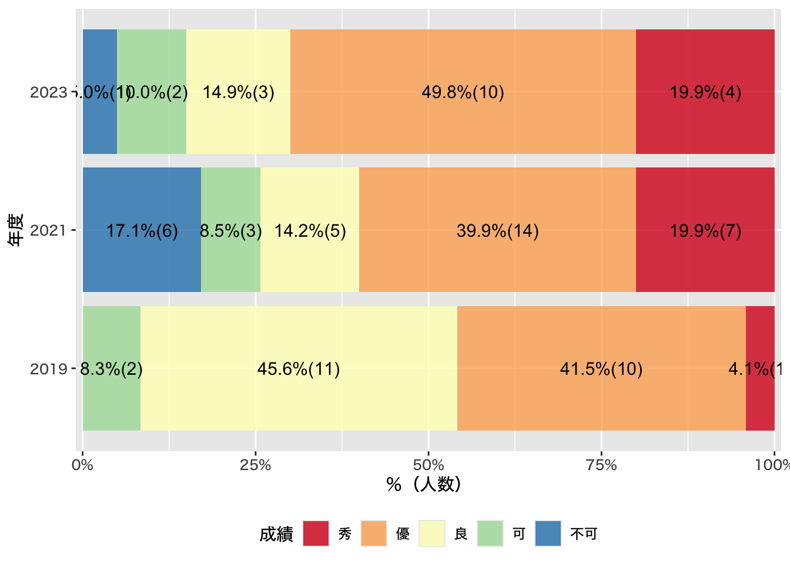

政治学概論Ⅰ 講評
苅谷 千尋, PhD ![]()
このページは2024年4月30日に閉鎖します
授業が終わってから、早2か月弱となりますが、皆さま、お元気でお過ごしでしょうか。すでに成績も公開されているかと思います｡たいへん遅くなり申し訳ございませんが、成績評価基準と簡単な講評をおこないます。
Ⅰ. 配点
以下のように配点いたしました。いずれもシラバス通りです｡
1. 授業の感想
授業の感想は最終日に課したアンケートを含め、計7回実施しました｡1回の提出を4点、すべて提出した者に+2点加点しました｡小計30点です｡初回に説明したように「楽しかった、勉強になった」などの感想は0点とする方針ですが、該当者はいませんでした｡
2. リーディングアサインメント
リーディングアサインメントは計10回実施いたしました｡1回の提出を3点としています｡小計30点です｡こちらもいい加減なものは0点とする方針ですが、該当者はいませんでした｡
3. レポート
レポート1
芋づる式マップを課すレポートです｡授業内容にかかわる理解の濃淡、独創的な観点の有無、マップの意図などの説明力の観点から評価しました｡それぞれ順に7点、5点、3点とし、小計15点としました｡「授業の感想」と「リーディングアサインメント」は質的な評価をしていませんので、レポートに関しては質的な評価を重視しています｡その結果、評価の低い者と高い者の差が大きくなっています｡平均点は10.2点です｡
レポート2
試験の作問を課すレポートです｡授業内容の理解度、独創性、説明力の3つの観点から評価しました｡それぞれ、7点、5点、3点とし、小計15点です｡質的な評価については前項同様です｡平均点は9.9点です｡
4. ディスカッション
ディスカッションについては、議論をリードした受講生と、必ずしもそうではない受講生など、参加度に濃淡があったかもしれませんが、私の目には全員、活発に議論していたように見えたこと、また、当日出席できずに代替レポートを提出した受講生がいることを考えて、出席ないし提出すれば、参加度の濃淡やレポートの善し悪しにかかわらず、10点を付けています。
Ⅱ. 成績分布
2019年度は対面授業、2021年度はオンライン授業、2023年度はオンライン（オンデマンド）と対面の併用です
「秀」は2021年度同様、「優」は前回より多い受講生に付けることができました｡こちらも初回にお話ししたように、この授業は「授業の感想」と「リーディングアサインメント」を提出することを前提に評価を付けています｡したがって、レポートは、実質的に「秀」か「優」のどちらを付けるかの決め手として用いています｡
「授業の感想」と「リーディングアサインメント」を何回も未提出だとよい評価にはなりません｡また、レポートを提出していても、これらがほとんど未提出であれば、単位認定できません｡こちらも初回にしっかりと説明しましたので、救済措置はとりません｡
Ⅲ. 講評
1. レポート1
芋づる式マップについては、事前に評価項目をお伝えしたように、量と質で評価しました。まず、授業内容に即した図や説明、線が書けているかどうかを確認したうえで､授業外の知識と結びつけられているかどうかを確認しました。
問題意識や独自の観点をもっていることがわかるマップは多くありましたが、政治学とのつながりがわからないものが多かった点が惜しまれます｡
岩田さんのマップがとりわけ秀でていました｡自分もしっかり書いたのに、と思っている人は、岩田さんのマップの視点や工夫を確認してみましょう｡

2. レポート2
作問については皆さんの工夫がいっそう目立つものでした｡いずれのレポートも、知識の確認だけでなく、生徒に考えさせるような工夫が凝らしてあった点が特によかったと思いました｡一方で、出題文に「この授業で得た知識、考えたことを活用して」とありますので、しっかりと「活用」してレポートを書いてほしかったと思うレポートが少なくありませんでした｡
優秀答案は岩田さん、須山さん、西田さんの3名です｡試験問題の焦点がしっかりと絞り込まれており、どのような力を確認したいのかがよくわかるレポートでした｡西田さんのレポートについては、ある事柄について賛成の立場、反対の立場それぞれの正答案が用意されており、とてもよいと思いました｡
本当はこのような優秀レポートをもとにグループワークできると、皆さんの理解がいっそう深まるとともに、教員になった際に役に立つと思うのですが、集中講義という形式上、日程の確保が難しい点が非常に残念です｡
Ⅳ. その他
2024年に開講される政治学概論Ⅱを、引き続き、私が担当することになりました。授業内容は、Ⅰでは扱えなかった国際政治学と、Ⅱからでも受講しやすいように、Ⅰで扱った内容と重複する箇所もありますが、他国との比較のなかで日本政治の特徴を明らかにするものです（比較政治学）｡
Ⅰ同様に、12月から1月をオンライン授業、2月上旬に対面授業とする予定です｡興味がある方は、どうぞ受講して下さい。皆さまと対面でお会いできる日を楽しみにしています。